Otaki, Chiba: things to do, food and stays
Otaki · Chiba
Otaki
Highlighted on the Chiba map.

Stay
SHINRA YORO VALLEY
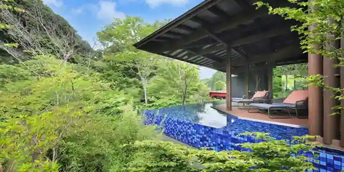
SHINRA YORO VALLEY
Inn at Ginitsutsumareru Onsen in Odadai, Otaki with riverside setting.
THE LAKOTAN
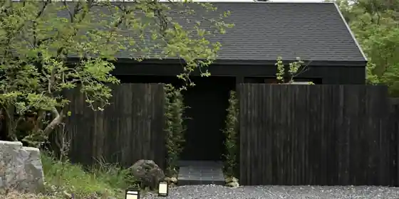
THE LAKOTAN
宿と食事 ローブン大多喜町
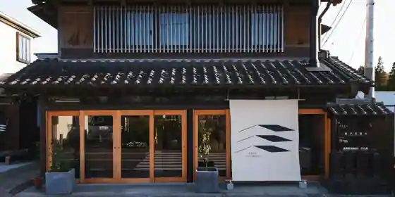
Yadoto Shokuji Robun Otaki Machi
Inn in Otaki with a renovated traditional house.
まるがやつ
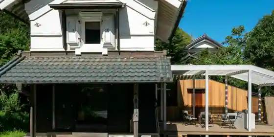
Marugayatsu
Inn in Shitaotaki, Otaki with a renovated traditional house.
緑邸～OHTAKI～
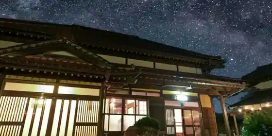
Midori Tei ~OHTAKI~
Inn in Shitaotaki, Otaki with one group per day and pet-friendly rooms.
高級古民家宿 城下町家 金蔵Ｋi n z o
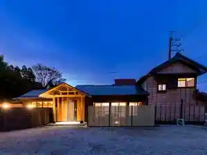
Kokyu Ko Minka Yado Jokamachi Ie Kinzo Ki n z o
Inn in Yanagihara, Otaki with a renovated traditional house.
Ｒｅｓｏｒｔ Ｖｉｅｗ 大多喜
Resort View Otaki
古民家の宿「和ごろも-WAGOROMO-」
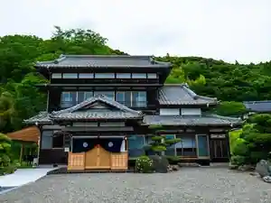
Ko Minka No Yado (Wa Goromo -WAGOROMO-)
Inn in Hachikoe, Otaki with a sauna and a renovated traditional house.
一棟貸し 里山古民家宿 和信庵
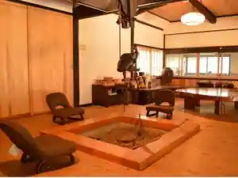
Hitomune Kashi Satoyama Ko Minka Yado Kazunobu Iori
Inn in Shitaotaki, Otaki with a renovated traditional house and a quiet countryside setting.
ほりのみせ
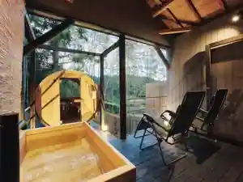
Horinomise
Inn in Utsutsuhara, Otaki with a sauna and a renovated traditional house.
平沢リゾート
Hirasawa Resort
Resort hotel in Hirasawa, Otaki with lakeside location.
湯楽の宿
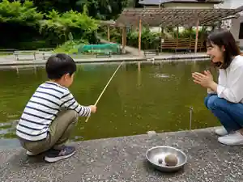
Yu Raku No Yado
Inn at Kuroyu Onsen in Katto, Otaki with pet-friendly rooms and family-friendly stays.
Dining
YAMANEKO Gerateria
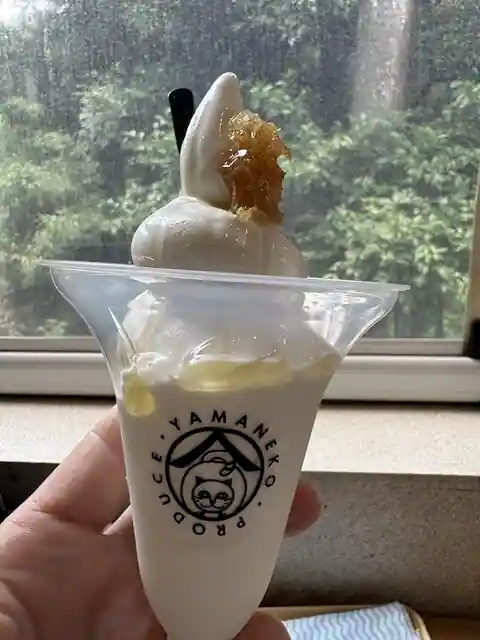
YAMANEKO Gerateria
とんかつ亭有家
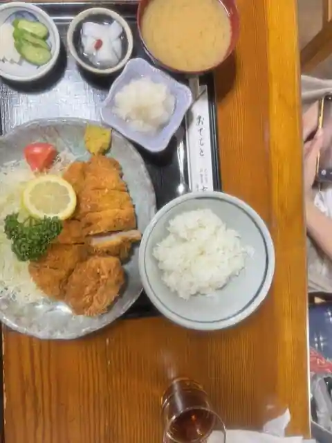
Tonkatsu Tei Arie
道の駅 たけゆらの里おおたき
Michi No Eki Takeyurano Sato Otaki
手打蕎麦ゆい
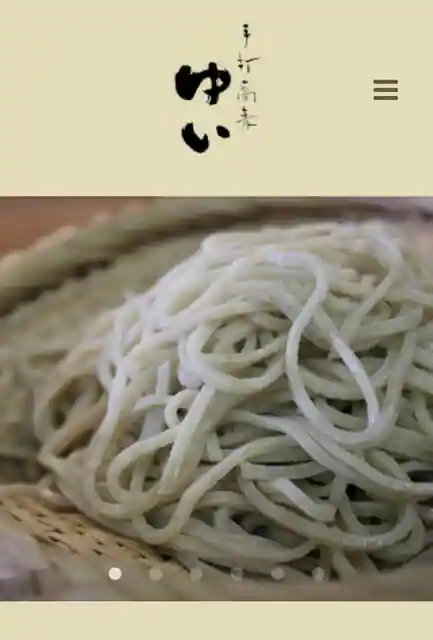
Teuchi Soba Yui
和食処清恵
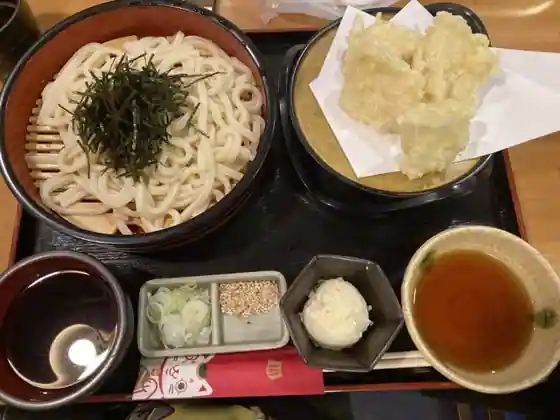
Washoku Tokoro Kiyoe
御菓子司 津知家
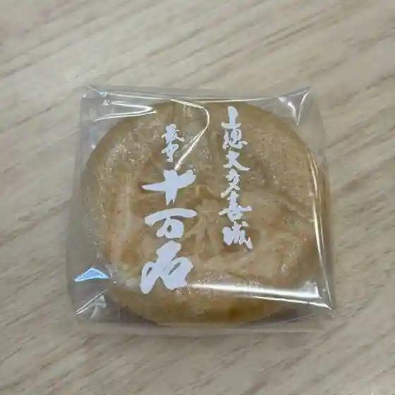
O Kashi Tsukasa Tsu Chi Ie
東尋
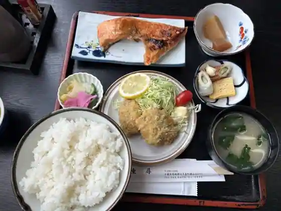
Higashi Jin
たけのこ
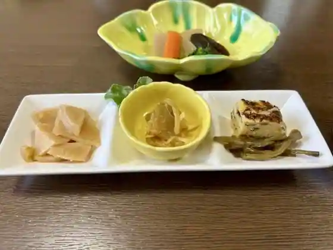
Takenoko
のいち 大多喜店
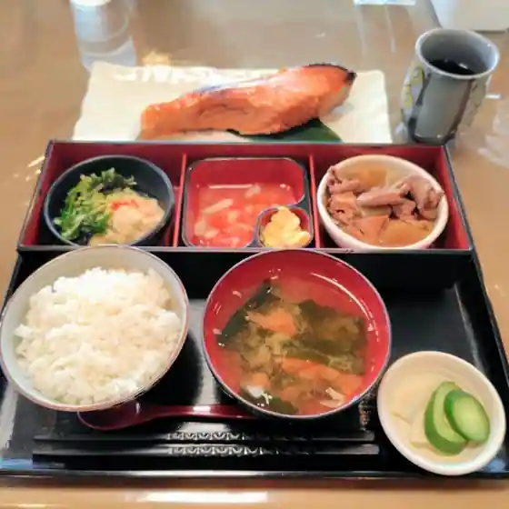
Noichi Otaki
ゆば喜 大多喜工場販売店
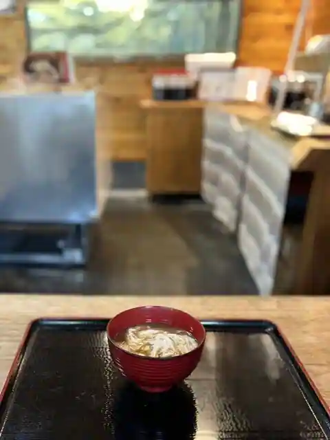
Yuba Ki Otaki Kojo Hanbai
カフェクラブ ビッグワン
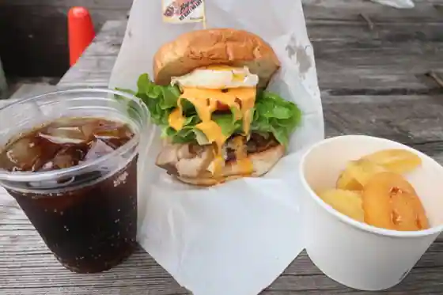
Cafe Kurabu Bigguwan
大多喜カントリークラブ
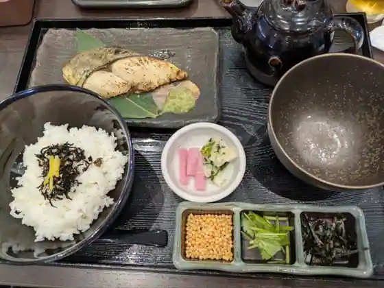
Otaki Kantorikurabu
あをい
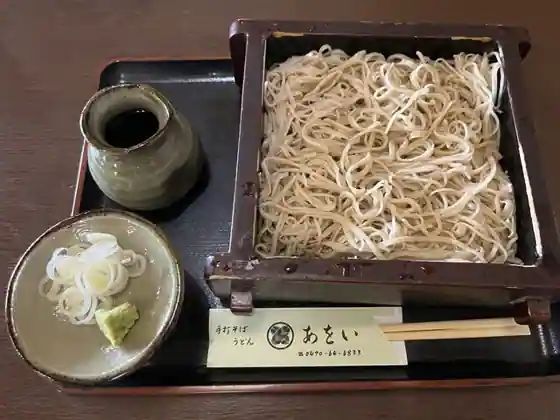
Awoi
ラ・フランス
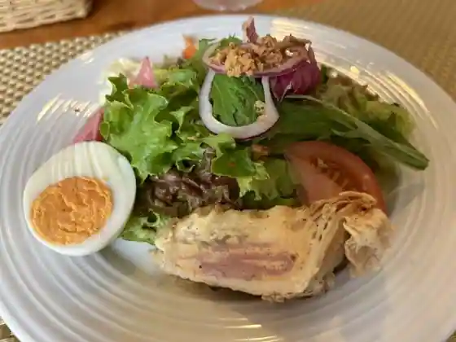
Ra Furansu
秘湯の宿 滝見苑
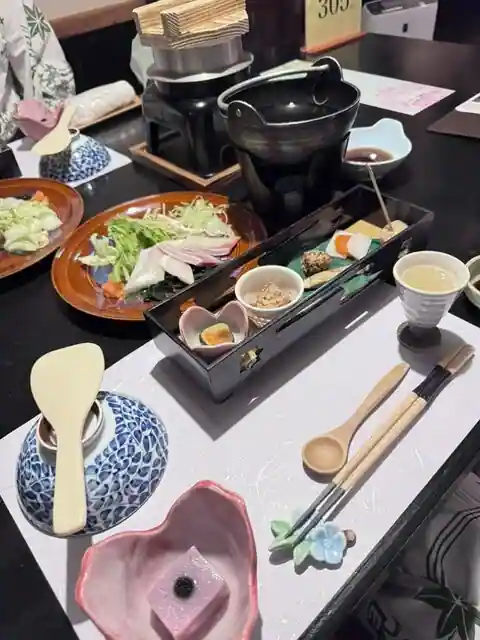
Hito No Yado Takimi En
番所
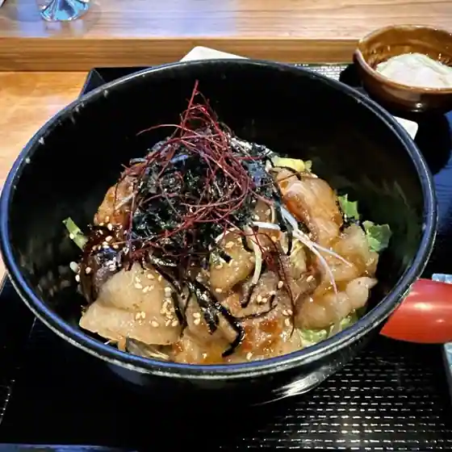
Bansho
平沢たけのこ村
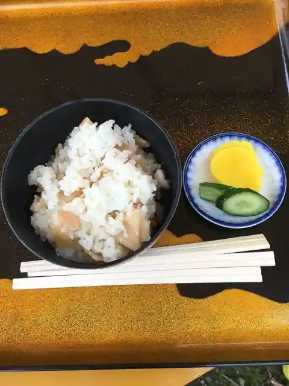
Hirasawa Takenoko Mura
焼き立てパン じゅん
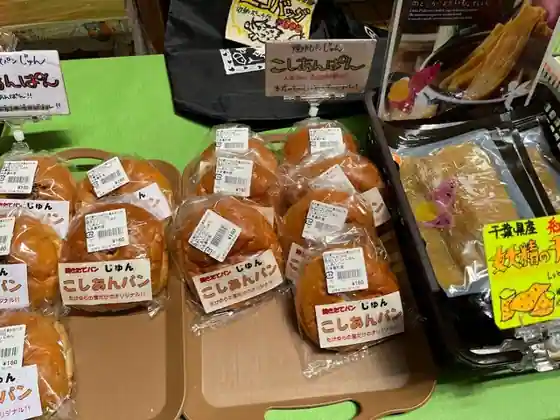
Yaki Tate Bakery Jun
キッチンタイム
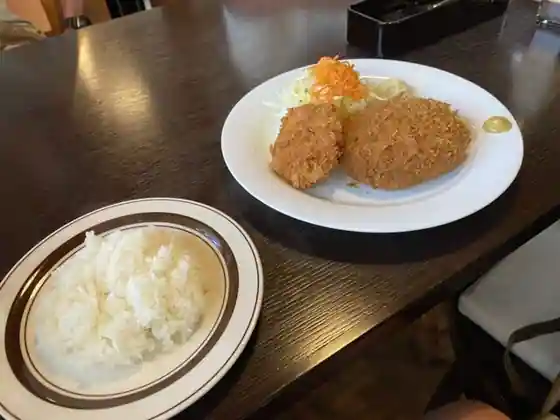
Kitchen Taimu
ろばた焼 童子
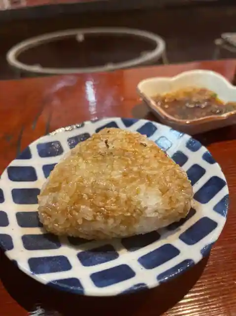
Robata Yaki Doji
すし処美月
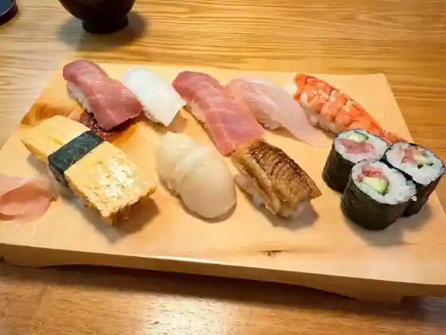
Sushi Tokoro Mitsuki
もちの木
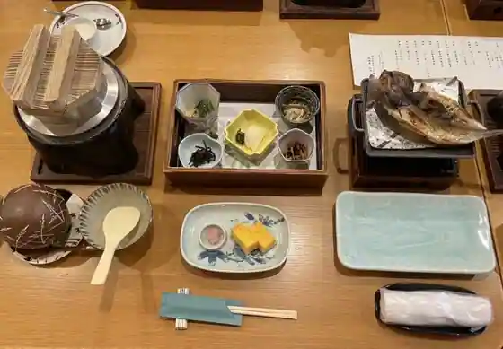
Mochino Ki
Sights
Yoro Gorge

Awa Mata Falls

Isumi Tetsudo

Kisetsu no Hana (Higan Hana) / Jo Shu Tera (Manshu Sa Hana Tera)

Otaki Shiro (Prefectural Chuo Museum Otaki Shiro Bunkan)
MUJI BASE OIKAWA
Takimi En Kenko Village Goriyaku Baths
Roadside Station Takeyura no Sato Otaki
Yama no Eki Yoro Gorge Kiraku Sato
Nichiren Shu Myoho Nama Tera (Asa Men Hara Highlands)
Satoyama Nogyo Experience Sukoppu Farm
Watanabe Ie House
Fika by TAKIVILLAGE
Kimizuka Ki no Ko Sono
Takanashi Farm
Otaki Shoka Hozon Museum (Kyu Kamaya)
Kisetsu no Hana (Ajisai) / Asa Men Hara Highlands
Tennen Gasu Memorial Museum
Sakura no Meisho / Otaki Shiro Shuhen